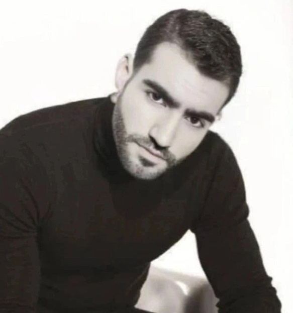

AGALI GHANE
AI Specialist · LLM & AI Security Expert
>_ Professional Summary
AI specialist with over 8 years of hands-on experience spanning machine learning research, production LLM engineering, and adversarial AI security. I work at the intersection of building and breaking large language models — designing, fine-tuning, and deploying them on one side, and stress-testing them for prompt injection, jailbreaks, data poisoning, model extraction, and supply-chain compromise on the other. My core specialism is LLM security: threat modeling, red teaming, and hardening of real-world AI systems before attackers get to them.
My approach bridges offensive security and ML engineering. I treat every model as an attack surface — auditing prompt pipelines, retrieval layers, tool-use and agentic workflows, and the surrounding infrastructure — then translate findings into concrete engineering fixes rather than reports that gather dust. I have led red-teaming engagements that uncovered 30+ critical vulnerabilities in production LLMs, built an automated red-teaming framework adopted across multiple product teams, and shipped a real-time prompt-injection detection pipeline that cut successful attacks by over 90%.
I design AI security programs grounded in industry standards — OWASP Top 10 for LLMs, MITRE ATLAS, NIST AI RMF, and ISO/IEC 42001 — and I care deeply about AI safety and alignment as an engineering discipline, not just a research topic. I am comfortable working cross-functionally with ML researchers, platform engineers, product, and legal teams, and I enjoy mentoring engineers on both secure ML practices and adversarial thinking.
Currently focused on securing agentic AI systems, RAG and tool-use pipelines, and multilingual model safety — particularly for Persian and Japanese, where evaluation coverage is still thin. I write and work fluently across English, Japanese, and Persian, and I bring a builder's mindset, a security researcher's paranoia, and a steady commitment to shipping systems that are useful without being dangerous.